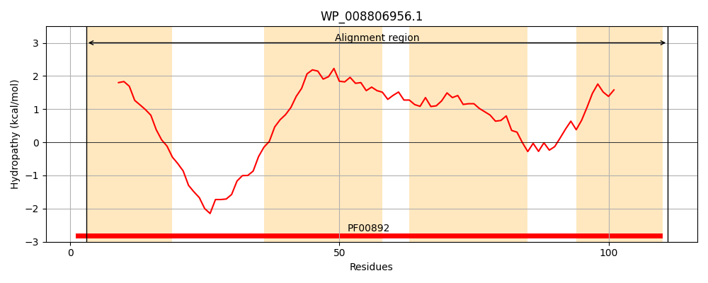
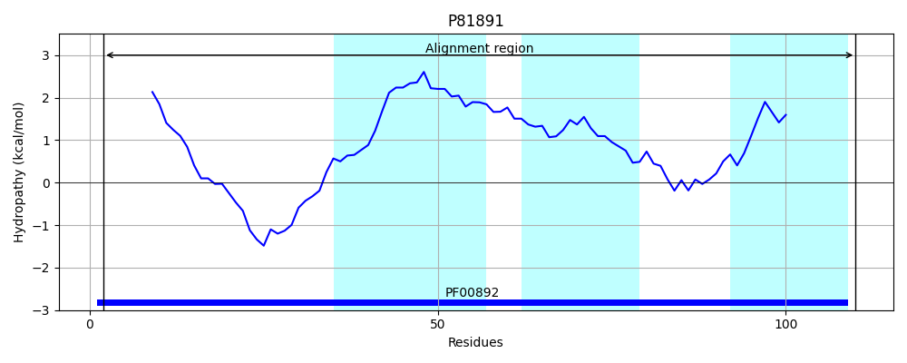
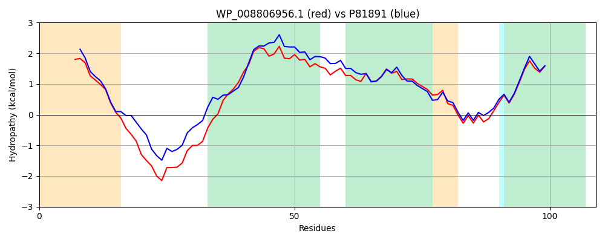

Hit Accession: P81891
Hit TCID: 2.A.7.22.2
Hit Description: gnl|BL_ORD_ID|11601 gnl|TC-DB|P81891|2.A.7.22.2 Probable 4-amino-4-deoxy-L-arabinose-phosphoundecaprenol flippase subunit ArnE OS=Salmonella typhi GN=arnE PE=3 SV=2
Mach Len: 109
e:0.000000
Query TMS Count : 4
Hit TMS Count: 3
TMS-Overlap Score: 2.900000
Predicted Substrates:CHEBI:22600;arabinose phosphate
BLAST Alignment:
| Protein Hydropathy Plots: | |
|---|---|
|  |  |
Pairwise Alignment-Hydropathy Plot: | |
|  | |